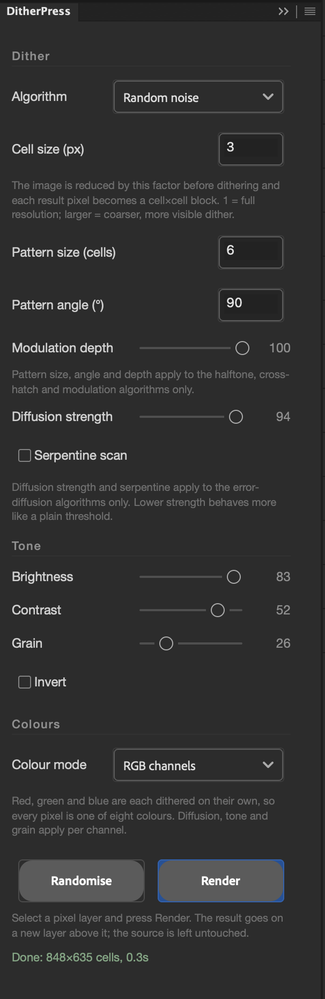

08
ditherpress
Twenty-two dither algorithms, a dot-scale control and four colour modes, rendered to a new layer.

about
Reads the selected layer's pixels, reduces the image by the cell size, dithers it with the chosen algorithm and writes the result to a new layer named <source> dither directly above the source, which is left untouched. Error-diffusion, ordered, pattern and noise families give very different textures from the same image; the colour mode then decides whether the result is ink on paper, a three-colour tonal ramp, eight-colour RGB, or a reduced palette. Built along the lines of Doron Supply's DitherTone Pro, using Photoshop's UXP imaging API — the first of these panels to do its own pixel maths rather than drive Photoshop's tools. Each render is one undo step and the settings persist between sessions.
- app
- photoshop
- type
- uxp panel
- built by
- claude
- state
- working
- version
- 1.1.0
- requires
- Photoshop 24.2+
- plugin id
- com.simonmorse.ditherpress
- folder
- DitherPress-Photoshop-Plugin
quick start
- 01Select a pixel layer (not a group) and open the panel from Plugins.
- 02Pick an algorithm and a cell size, choose a colour mode, and press Render. The status line reports the cell grid, ink coverage and render time.
- 03Press Randomise to roll every setting except your colours, then Render again. Undo removes a whole render in one step.
- 04For large files start at cell size 2 or more; cell size 1 on a poster-sized image takes several seconds, and palette mode with many colours is the slowest path.
controls
dither
- Algorithm22 options
- Error diffusion: Floyd-Steinberg, False Floyd-Steinberg, Jarvis-Judice-Ninke, Stucki, Burkes, Sierra, Sierra Two-Row, Sierra Lite, Atkinson. Ordered: Bayer 2×2 to 16×16, Cluster dot 8×8. Pattern: Halftone dots, Halftone lines, Cross-hatch, Modulation (waves), Modulation (contours). Noise: Plain threshold, Random noise, Interleaved gradient noise.
- Cell size1 – 64 px
- The image is reduced by this factor before dithering and every result pixel becomes a cell×cell block. 1 is full resolution; 4 – 8 gives a visibly chunky dither.
- Pattern size2 – 128 cells
- Period of the halftone, cross-hatch and modulation patterns, in cells.
- Pattern angle0 – 180°
- Rotation of those patterns. 45° is the classic halftone; 0 and 90 give horizontal and vertical line screens.
- Modulation depth0 – 100
- How far the tone underneath pushes the wave or contour pattern out of line. Modulation modes only.
- Diffusion strength0 – 100
- Fraction of the quantisation error passed to neighbours. 100 is textbook; lower values drift towards a plain threshold. Error-diffusion algorithms only.
- Serpentine scandefault on
- Alternates scan direction each row, which breaks up the diagonal worms error diffusion otherwise produces.
tone
- Brightness / Contrast-100 – 100
- Applied before dithering, per channel in the colour modes.
- Grain0 – 100
- Random noise added before dithering, for a rougher, more distressed result.
- Invert
- Inverts the tone before dithering, so ink and paper swap roles.
colours
- Colour modeInk & paper / Tonal / RGB channels / Palette
- Chooses which controls below apply and what the render contains.
- Ink / Paperhex
- The two colours of Ink & paper mode. Paper is also the background of Tonal mode.
- Transparent paperInk & paper, Tonal
- Leaves paper pixels fully transparent so only the ink lands on the new layer.
- Shadows / Midtones / Highlightshex, Tonal mode
- Ink pixels take a colour from this three-stop ramp according to the tone underneath them — a dithered gradient map.
- RGB channels
- Red, green and blue are dithered independently, so every pixel is one of eight colours.
- PaletteFrom image, or a preset
- From image builds a palette by median cut with the colour count below. Presets: Game Boy, Commodore 64, CGA, ZX Spectrum, Pico-8, four greys, and a process set of RGB + CMY + black + white.
- Colours (from image)2 – 64
- Palette size when building from the image.
- Spread0 – 100
- For ordered and pattern algorithms in Palette mode: how hard the threshold pattern pushes a pixel towards its neighbouring palette colours. Error diffusion ignores it and diffuses the colour error instead.
workflow
finding a texture
Randomise is the quickest way in: every press gives a different algorithm, scale and colour treatment. When one is close, stop randomising and adjust by hand.
print-like screens
Halftone dots at 45° with a pattern size of 6 – 10 cells reads as a newspaper screen; lines at 0° or 90° as a line screen. The dot uses a proper Euclidean spot function, so ink dots in the lights become paper dots in the darks the way a real screen does.
the dithertone modulation look
Modulation (contours) with a modest pattern size and a high depth bends the line screen around the image's tones. Modulation (waves) is the gentler version.
retro palettes
Palette mode with a preset and cell size 2 – 4 is the 8-bit route. Error diffusion gives the smoothest blends; Bayer with a high Spread gives the crunchier ordered look of the original hardware.
layering
Transparent paper puts ink alone on a clear layer, so a dither can sit over the original or over a flat colour and be blended, masked or offset with Misregistered Print.
gotchas
- Pixel layers only — select a layer, not a group. Semi-transparent areas are matted onto white before dithering, so they lighten rather than darken.
- Pure JavaScript pixel loops: a 6000×4000 image at cell size 1 takes a few seconds and a couple of hundred MB while it runs. Larger cell sizes are much faster.
- Pattern size, angle and depth only affect the pattern algorithms; diffusion strength and serpentine only the error-diffusion ones. Changing them under any other algorithm does nothing.
- Colour fields take six-digit hex (with or without #). An unreadable value silently falls back to the default.
- The panel is permanently scrollable on purpose: UXP text fields can stop accepting typing when a panel's scrollbar appears or disappears after docking. If a field still goes dead, close and reopen the panel from the Plugins menu before resorting to a Photoshop restart.
rebuilding
For quick iteration, load the folder's manifest.json in UXP Developer Tools instead — dev-loads are live-reloadable but vanish when Photoshop restarts.
To update the installed copy: bump version in manifest.json, zip manifest.json + index.html + main.js (at the archive root) with a .ccx extension, and run the installer agent again.
installing
- 01In Terminal, run Adobe's installer agent on the plugin's
.ccxfromPhotoshop Scripts/CCX Installers:"/Library/Application Support/Adobe/Adobe Desktop Common/RemoteComponents/UPI/UnifiedPluginInstallerAgent/UnifiedPluginInstallerAgent.app/Contents/MacOS/UnifiedPluginInstallerAgent" --install <plugin>.ccx - 02Restart Photoshop. The panel appears under Plugins and survives restarts — UXP Developer Tools is not needed.
- 03Do not double-click the
.ccx: Creative Cloud wrongly reports Compatible app required for unsigned plugins.